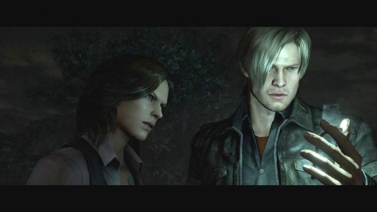
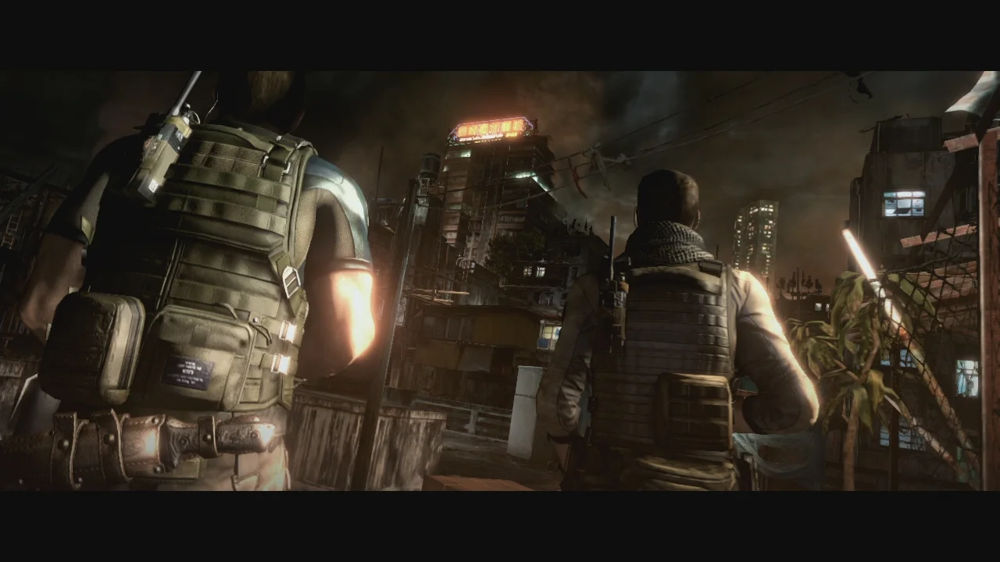
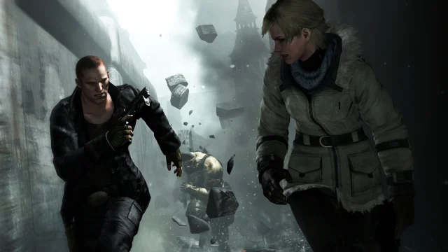
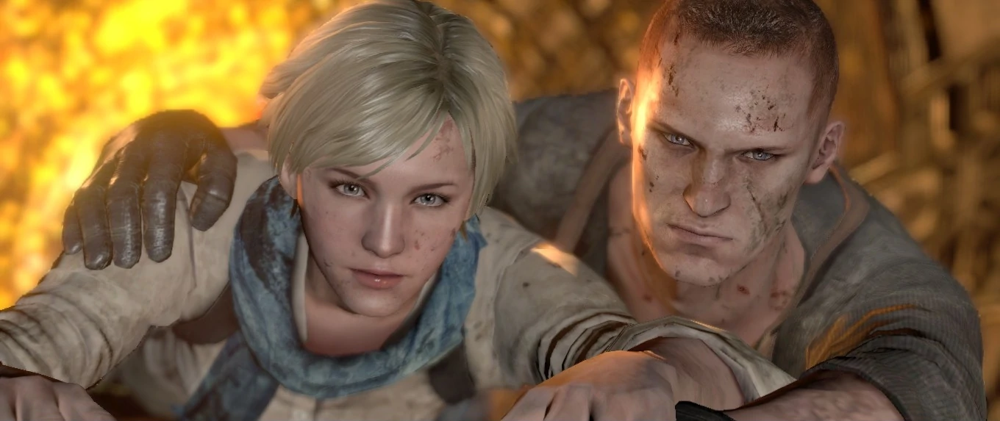

Leon's Campaign
Di Amerika Serikat, Presiden Adam Benford dijadwalkan mengungkapkan
kebenaran tentang insiden Raccoon City dalam sebuah seminar di
Universitas Ivy di Tall Oaks. Namun, selama seminar, dia tiba-tiba
bermutasi menjadi zombie akibat serangan bioteror mendadak yang
diatur oleh organisasi tak dikenal. Seorang pria di universitas
memandu Leon S. Kennedy dan rekannya, Helena Harper, dalam pencarian
putrinya yang hilang, Liz. Selama pencarian, pria tersebut mulai
batuk dan mengeluhkan iritasi kulit, sehingga menimbulkan
kecurigaan. Akhirnya, mereka menemukan putrinya, tetapi dia berubah
menjadi zombie dan melahap ayahnya di lift sebelum menyerang Leon.
Mereka berhasil melarikan diri dari lift, berjuang melewati tempat
parkir dan ruang pengawasan, dan menuju ke mobil polisi, tetapi
terpaksa menggunakan terowongan selokan terdekat setelah mobil
terbalik.
Ini membawa mereka melalui jalur kereta api dan ke pusat Tall Oaks,
di mana mereka menemukan seluruh kota telah terinfeksi. Mereka
berkelahi di jalan-jalan dan mencapai toko senjata di mana mereka
bertemu dengan orang-orang yang selamat lainnya: pasangan dan
seorang petugas polisi. Setelah melawan gerombolan zombie di toko
senjata, mereka diizinkan naik ke atas oleh pemiliknya, hanya untuk
menghadapi zombie yang lebih banyak lagi. Akhirnya, sebuah bus
sekolah tiba untuk menyelamatkan para penyintas, tetapi pemilik toko
senjata diseret keluar dari jendela bus dan dibunuh, bersama dengan
seorang turis Jepang yang mencoba menyelamatkannya...

Chris' Campaign
Setelah kematian beberapa tentara di bawah komando Chris di Edonia
enam bulan sebelumnya, tepatnya pada 24 Desember 2012, Chris
meninggalkan BSAA dan menjadi bangkai kapal yang mabuk. Namun, dia
diyakinkan oleh Piers Nivans untuk kembali dan menyelesaikan misinya
untuk mengakhiri bioterorisme. Meski awalnya ragu, Chris akhirnya
kembali ke organisasi tersebut. Chris Redfield dan BSAA, termasuk
Piers, kemudian dikirim ke kota pesisir Lanshiang, Tiongkok yang
dilanda perang...

Jake's Campaign
December 24, 2012

Jake Muller adalah tentara bayaran dari Tentara Pembebasan Edonian
Slavia Selatan fiksi, yang bermitra dengan agen Divisi Operasi
Keamanan (DSO) Sherry Birkin selama serangan bio-teroris. Sherry
membutuhkan antibodi langka Jake yang dapat menghasilkan penangkal
C-Virus. Sebagai gantinya, Jake menuntut $50 juta. Mereka bertemu
dengan makhluk kuat yang mengejar mereka, dan akhirnya bertemu
dengan Tim Alfa BSAA, yang dipimpin oleh kapten Chris Redfield.
Namun, reuni mereka terganggu oleh penyergapan pasukan J'avo dan
B.O.W.
Ekstraksi mereka dari Edonia disabotase oleh B.O.W. bernama
'Ustanak', dan mereka menabrak pegunungan. Di sana, mereka
menemukan bahwa Sherry memiliki kemampuan penyembuhan regeneratif
karena G-Virus yang tidak aktif di sistemnya. Belakangan, Neo
Umbrella menangkap mereka, dan "Ada Wong" mengungkapkan kepada
Jake bahwa ayah kandungnya adalah bio-teroris Albert Wesker.
Selama enam bulan berikutnya, Jake dan Sherry menjadi sasaran
berbagai tes oleh kelompok bio-teroris.
June 30, 2013

Jake dan Sherry berhasil keluar dari fasilitas Neo Umbrella, hanya
untuk menemukan diri mereka di Lanshiang, China. Sherry berhasil
menghubungi atasannya dan mengatur pertemuan di China. Dalam
perjalanan ke tempat pertemuan, mereka berdua menyaksikan pesawat
Pemerintah AS jatuh ke kota, di mana mereka menemukan dua orang
yang selamat dari kecelakaan itu, agen DSO Leon S. Kennedy dan
Agen Dinas Rahasia AS Helena Harper. Di sana mereka mengetahui
bahwa bos Sherry, Derek C.Simmons, adalah dalang di balik serangan
bioteroris C-Virus. Sherry memberi tahu Leon bahwa dia seharusnya
bertemu dengan Simmons di Lanshiang. Sebelum mereka dapat
menyelesaikan percakapan mereka, mereka diserang oleh Ustanak, dan
setelah dikalahkan, kedua pasangan tersebut setuju untuk bertemu
di titik pertemuan.
Ketika Jake dan Sherry akhirnya tiba di lokasi pertemuan, mereka
menemukan Leon dan Helena berhadapan dengan Simmons, yang dengan
mudah mengakui bahwa dia adalah dalang di balik wabah tersebut dan
menjelaskan bahwa dia melakukannya untuk mempertahankan AS dan
stabilitas global. Simmons kemudian memerintahkan pengawalnya
untuk menembak jatuh Leon dan Helena. Saat bersembunyi, Leon
meminta Jake dan Sherry untuk melarikan diri sementara mereka
menyelesaikan masalah pribadi mereka dengan Simmons. Mereka pergi,
tetapi tidak sebelum Sherry memberi Leon kartu SD yang berisi
informasi penelitian penting mengenai antibodi Jake. Jake dan
Sherry berhasil melarikan diri, tetapi sekali lagi ditangkap oleh
Neo Umbrella...